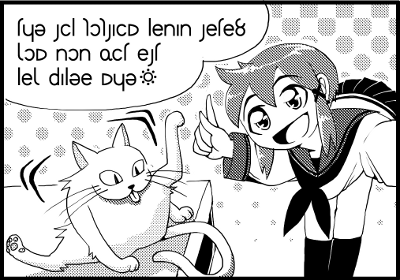

|
１コマ目前編(しあ)

ねこにっきは、「のんびり屋のしあ」、「お姉さんなみーふぁ」、「大人しいゆーれ」、「子供っぽいふぇーる」の4人が登場するほのぼのマンガです。
みんなアルナ大の学生だけど、日本とは学年制度が違うから、年齢でいえば15歳の中3よ。
今日は学校に白猫がやってきました。
しあたちの教室に入ってきて、ぶらっと誰もいない机に陣取ったの。
休み時間になって、しあたちが猫に話しかけてるっていうシーンよ。
●1コマ目

*クリックすると開けます。別タブで開いておくと便利です。

この栗毛の子が「のんびり屋のしあ」。
首都アルナの南にあるカテージュから引っ越してきたの。海辺の都市で、温暖なバカンス地だよ。
カテージュ人はおっとりしたのんびり屋さんが多いんだけど、しあもそうみたい。

日本のセーラー服みたいなのを着てるね。アルバザードにもこういう服があるんだぁ。
絵があると文化も分かって一石二鳥だね。
それにしても……うわぁ、転写じゃない幻字だーヽ(；´・ω・)ﾉ 生幻字ｺﾜｲﾖ…
*厳密にはアルナ大の制服ではありません。キャラの描き分けのためにデザインを変えています。

まずはアルファベットに転写するところから始めようね。ゆっくりでいいよ。
転写の練習をしているうちに、けっこう覚えるものだよ。
☆転写
xia: tyu sil koksaim lenan sete? xom non fit est lex palue myu (xante

へぇ、数字の8みたいな文字はクエスチョンマークなんだね。
最後の文字はなんだろ。工場の地図記号っていうか、太陽っていうか……。

太陽か、おしい。それは月なの。満月のマークよ。
話者の口調が上機嫌だってことを表すの。
満月はアルカでxanteっていうので、転写するときは(xanteとすればOKだよ。

話し方を表す文字まであるんだ。面白いね。日本語の(笑）とか♪とかにあたるものかな。
さて、最初の文は"tyu sil koksaim lenan sete?"か。やっぱり本番になると急に単語が難しくなるね。
……あれ？でもtyuとsilは理論編でやったような。tyuは女言葉の「あなた」で、silは未来形を作る副詞だっけ。
あぁ、記憶があいまいだわ(>_<)。silを辞書で引いてみよ。
----
［名詞］未来、将来
［純副詞］～するだろう。未来時制の副詞。
［動詞］～だろう。未来時制の繋辞。
［形容詞］未来の
［反意語］ses
19:制:sikt（あとで）
【用例】
amir sil 未来のだんな様
----

未来形を作る副詞はsilで合ってるわよ。純副詞のところね。
ほかにも名詞で「未来」って意味があるの。色んな品詞の語義も同時にチェックすると知識が広がるわよ。
さて、"tyu sil koksaim lenan sete?"のsilは何詞の部分を見れば良いでしょうか？

えぇっと……tyuは動詞じゃないから、silが副詞っていう解釈はないわね。
アルカは「主語＋動詞＋目的語」だから、tyuは主語のはず。となるとsilは動詞だから、この3番目の語義か。
ねぇレイン、未来時制の繋辞って何？いや、未来時制はわかるけどさ。

繋辞はbe動詞のことだよ。
silひとつでwill beになるの。

なるほどね。じゃあ、「あなたは～になるだろう」って言ってるのか。
……何になるんだろ。tyu sil koksaim lenan……。
あ、よく見たらlenanも理論編で出てきたね。代名詞でやったっけ。確か意味は「私たちの」。
ってことは、「あなたは私たちのkoksaimになるだろう」ってことね。

さすがにkoksaimは引かないと分からないわね。
参考までに。
同じクラス……あ、クラスメートのことか。
つまり、「あなたは私たちのクラスメートになるだろう」ってことね。
そのとーり！
では問題。koksaimのどの部分が「同じ」で、どの部分が「クラス」なのかしら？

えとえと……等式がkoksanで、同じサークルの仲間がkoksemsだから……kokとかkoksとか……。
良い着眼点ね。そう、「同じ」はkokというの。
上下の単語と比べることで、より理解を深めることができるのよ。辞書の良いところよね。
てゆうか、この辞書って物理や地学や気象の用語まで入ってるのね……。
ところで、tyu sil koksaim lenan sete?の最後のseteって何かな。
----
［文末純詞］［rente］kok
古
----

あれ、タグだらけ……。
ねぇ、これどういうこと？

これはね、「seteは文末で使う純詞という品詞です」「seteは大人しい女の子が使う言葉です」「意味はkokと同じです」ということを表してるの。
文末純詞は日本語の「～ね」「～さ」「～だよ」「～だわ」「～でしょ？」みたいな単語だよ。
あと、いちど時間があるときに、yunkやmiliaについて調べてみてね。
さて、この場合kokを引くことになるんだけど――
----
［形容詞］同じの
［反意語］koot
［格詞］～と同じく、～と同じで
［文末純詞］～ですね？ 確認を求める。
［接続詞］tとkは同じくらい～だ。
［数学］合同
［音楽］シーミレ
13←古:koko。純詞用法は「私の考えと同じか？」という意味から来る。
【成句】
im kok 同時に
【用例】
ti siina miik kok? 君はリンゴが好きだよね？
an kok ti et kai. 私は君くらい大きい。
----

あ、［文末純詞］はっけん。
へぇ、「～ですね？」という確認を意味するのか。
ということは、"tyu sil koksaim lenan sete?"は「あなたは私たちのクラスメートになるんですね？」という意味か。
あ、そうか。教室に入ってきた猫が住み着いちゃったから、そう言ってるのか。
ふぁー、ようやく分かったよ。

おつかれさま♪
ありがとー。
でもなんか凄い達成感だよ、レイン！
よーし、いったん休憩して、二文目もクリアするぞー！
|